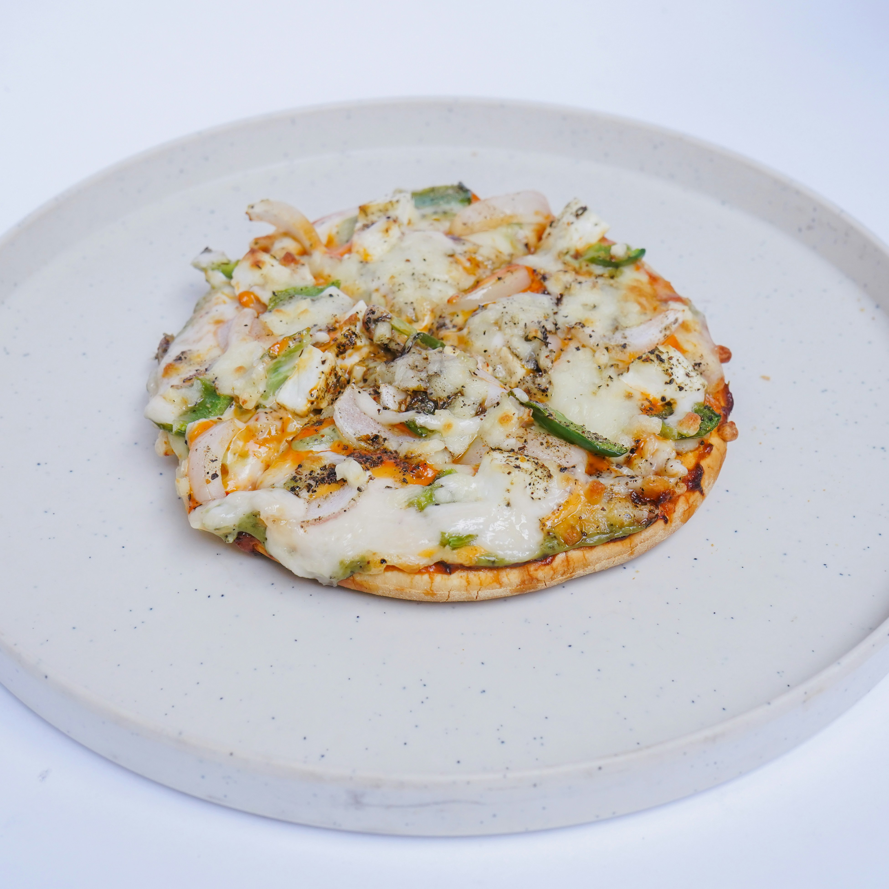

Home
Chicken Pesto Pizza

Description
Chicken pesto pizza replaces traditional tomato sauce
with basil pesto and pairs cooked chicken
with melted cheese on a baked crust.
Ingredients
- Dough: For convenience, you can pick up a 1-pound ball of raw pizza dough from the refrigerated section at most grocery stores.
Pre-baked crusts are another quick alternative.
- Pesto: I use my homemade pesto sauce or basil pesto.
Fresh basil leaves are the base of the sauce, giving it a slightly peppery flavor with hints of anise and mint.
Parsley, extra-virgin olive oil, garlic, pine nuts, and Pecorino Romano add a rich, spicy taste to the herb sauce. The recipe makes ½ cup.
- Mozzarella: A grateable cheese like mozzarella has enough moisture to melt and flow at around 130°F (54°C).
It’s soft because of the water held within its casein protein network. Its mild flavor lets the pesto shine through.
- Parmesan: Sprinkle Parmesan cheese on top right before serving to add a sharp,
nutty taste. It’s a hard, dry cheese that doesn’t melt well, so it’s best added at the end.
- Chicken: Any leftover shredded chicken works, whether it’s breast or thigh meat.
- Tomatoes: Even though we don’t have a traditional red sauce,
I still use fresh tomatoes as a topping. Use small, ripe cherry tomatoes.
As they bake, their sweetness and natural savory glutamates concentrate for a robust flavor.
- Garnish: Toasted pine nuts and thinly sliced fresh basil add crunch and a fresh,
herbal finish to the pesto chicken pizza.
Steps
- Let the chilled pizza dough sit at room temperature for 30 minutes to make it easier to work with. It will stretch more freely.
- The oven should be nice and hot before adding the pizza. Set the oven rack to the lowest position and heat to 500°F (260°C).
- A baking sheet with olive oil and sprinkle with cornmeal.
The fat and granules add texture for a delightful contrast between toppings and crust.
The cornmeal also prevents the dough from sticking to the pan
- On a floured work surface, use your hands to stretch and shape the dough into a 10-inch circle.
You can use more flour if it’s sticky, but don’t add too much, or it will become tough.
Transfer the dough to the oiled baking sheet and press it into a 12-inch circle.
- Spread the pesto sauce evenly on the dough first. I like to brush the edges with olive oil so it bakes up golden brown and crispy.
- Layer the mozzarella cheese over the pesto, followed by the chicken and tomatoes,
so the melting cheese binds the toppings together. Before baking,
I sprinkle the pizza with salt and pepper to season the tomatoes and draw their juices to the surface,
where they quickly evaporate in the hot oven.
- Bake at 500°F (260°C) on the lowest oven rack until the crust is golden brown on the bottom and edges and the cheese is bubbling, about 10 to 12 minutes.
- Before serving, sprinkle with Parmesan cheese, toasted pine nuts, and fresh basil. Slice it up and enjoy it while it’s hot.